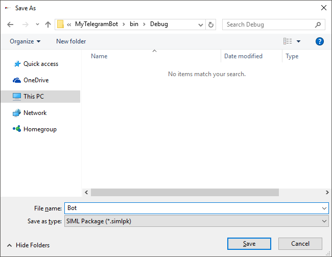

Telegram Assistant
Syn.Bot.Assistant library comes with a TelegramAssistant class that is tailored for rapid Telegram Bot deployment based on SIML and Syn.Bot framework. The class takes care of the following.
- Automated User name part extractions (Name, First Name, Last Name and Username)
- Handling of messages received by Telegram Bot by directly generating responses from the SIML knowledge-base.
- Service Timer - adds support for internal bot timer and
Lateadapter. - Handling of callback queries.
- Auto construction of Telegram's Inline Keyboard when formatted
Hintvalue is received. - Adds custom implementation of
ISuggestionFormatterfor Example processing withinHintelement. - Support for Parse Mode and Keyboard Alignment selection.
Overriden User Variables
| Variable Name | Description |
|---|---|
Name or FirstName |
Returns the first name of Telegram user. |
| LastName | Gets the last name of the Telegram user. |
| Username | Gets the User ID of the Telegram user. |
Deploying a Telegram Bot
Requirements
- .NET Framework 4.5 (on Windows 7 or 8)
- Visual Studio 2015 Community Edition or above
- Syn Bot Studio 1.54 or above
As an alternative you may also download the Sample Telegram Console application project from our GitHub repository.
As the backend knowledge-base processing part of a Bot is usually held in a server environment, we will create a Console application to keep memory usage to its bare minimum.
In this tutorial we'll use Visual Studio 2015 Community Edition to create a Console C# project that will allow us to create an SIML based server which would power a Telegram Bot.
- Start Visual Studio
- Click on File, select New and then choose Project
- Under Visual C# select Console Application.

Name your project MyTelegramBot and choose OK
Once the project has been successfully created. On the toolbar select Tools, point to NuGet Package Manager and select Package Manager Console.
- Type Install-Package Syn.Bot.Assistant and press Enter

The Syn.Bot.Assistant library along with its dependencies will now be referenced in your project.
SIML Knowledge-Base
For the sake of this tutorial we'll use the pre-built knowledge-base of Maya Bot which is a telegram Inline Keyboard based SIML Knowledge-Base. Download the Maya Web Assistant Knowledge-Base from GitHub.
- After the repository has been downloaded, launch Syn Bot Studio.
- Click on File, select Project and then choose Open.
- Browse to the downloaded repository and select the SIML project file.
- After the project is loaded on the toolbar click on Project and select Export to Package.
- Name the file
Bot, browse to thebin/debugdirectory of your Console application and select Save.

- The SIML knowledge-base package will now be saved as
Bot.simlpk.
Creating a Telegram Bot
To obtain a Telegram Bot Access Token
- Download Telegram to your Desktop or Mobile from Telegram
- Search for BotFather and then click on Start.
- Type /newbot

- Enter a display name for your bot. In our example we've used Maya
- After you've specified the bot name, enter a unique Bot name. You can use _ as separators. For this tutorial we've used the name My_VA_Bot as the Bot name.
- After that you'll be presented with the HTTP Access Token.

- Copy the HTTP API access token as shown below.

You have now successfully created a Telegram Bot and acquired its Access Token.
Code
Now switch to the Visual Studio project and type the following within the Main static method.
var telegramAssistant = new TelegramAssistant("TELEGRAM_BOT_ACCESS_TOKEN");
telegramAssistant.Bot.PackageManager.LoadFromString(File.ReadAllText("Bot.simlpk"));
//Start receiving user messages.
telegramAssistant.Client.StartReceiving();
Console.WriteLine($"Your Telegram Bot is now Online: {DateTime.Now}");
Console.ReadLine();
//Stop receiving user messages.
telegramAssistant.Client.StopReceiving();
Replace
TELEGRAM_BOT_ACCESS_TOKENwith the Telegram Bot Access Token.
- To start the Console application press F5.

Your SIML based Telegram Bot is now online. You may now chat with your bot on Telegram.
Performance
The TelegramAssistant is designed to be launched in a Server (either Windows or Linux) environment where the internet speed is in Mbps or Gbps. During local testing if your computer's internet speed is slow it would directly impact the response time of your Telegram Bot.